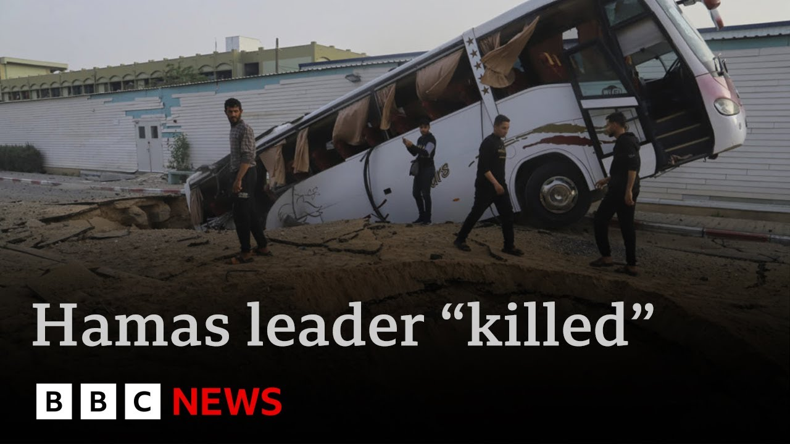

【内塔尼亚胡称以色列空袭可能已击毙哈马斯领导人 | BBC新闻】
Summary: Israel's Prime Minister Benjamin Netanyahu claims Hamas leader Muhammad Sinoir was likely killed in an airstrike but vows to continue fighting until hostages are freed, Hamas is defeated, and Israel controls Gaza. UN officials report Palestinians still await aid despite the blockade being lifted two days ago.
摘要： 以色列总理本雅明·内塔尼亚胡称哈马斯领导人穆罕默德·西努尔可能在空袭中丧生，但誓言将继续战斗，直到人质获释、哈马斯被击败且以色列控制加沙。联合国官员报告称，尽管封锁已解除两天，巴勒斯坦人仍在等待援助。

⏱️ Estimated Reading Time: 4 min
Israel's Prime Minister Benjamin Netanyahu says the leader of Hamas, Muhammad Sinoir, has probably been killed in an air strike.
以色列总理本雅明·内塔尼亚胡表示，哈马斯领导人穆罕默德·西努尔可能在空袭中丧生。
But that the fighting in Gaza would not stop until all the remaining hostages were brought home, Hamas defeated, and Israeli forces in control of the whole of Gaza.
但加沙的战斗不会停止，直到所有人质获释、哈马斯被击败且以色列军队控制整个加沙。
UN officials say that Palestinians in Gaza are still waiting for aid to arrive two days after the lifting of a blockade on aid.
联合国官员表示，加沙的巴勒斯坦人仍在等待援助，尽管援助封锁已解除两天。
Here's Lucy Williamson.
以下是露西·威廉姆森的报道。
For 19 months, they've been looking for the end of the road in Gaza.
19个月来，他们一直在寻找加沙的出路。
Home as elusive as the end of the war.
家园如同战争的结束一样遥不可及。
Families who've been moving for more than a year were moving again today as Israel's army issued new displacement orders and its prime minister laid out his plan for Gaza's future.
因以色列军队发布新的撤离命令且总理公布加沙未来计划，已流离失所一年多的家庭今日再次搬迁。
Our forces are capturing more and more areas to clear them of terrorists and kamas terror infrastructures.
我们的部队正在占领越来越多的地区，以清除恐怖分子和哈马斯的恐怖基础设施。
At the end of this process, all areas of the Gaza Strip will be under Israeli security control and kamas will be completely defeated.
在这一过程结束时，加沙地带所有地区将处于以色列安全控制之下，哈马斯将被彻底击败。
Also, in Mr. Netanyahu's plan, the suggestion by US President Donald Trump that Gaza's entire population leave for other countries.
此外，内塔尼亚胡的计划中还包含了美国总统唐纳德·特朗普关于加沙全体居民迁往其他国家的建议。
I am ready to end the war on clear terms that will ensure Israel's security.
我准备在确保以色列安全的明确条件下结束战争。
The hostages return home.
人质返回家园。
Kamas disarms and its leadership is expelled.
哈马斯解除武装，其领导层被驱逐。
We're implementing the Trump plan.
我们正在实施特朗普的计划。
Gaza residents who want to leave will be able to leave.
希望离开的加沙居民将能够离开。
Israel is under immense international pressure to end the war.
以色列面临巨大的国际压力要求结束战争。
A recent aid blockade has triggered new rifts with key allies like the UK.
最近的援助封锁引发了与英国等关键盟友的新分歧。
More than a hundred a trucks have now crossed into Gaza, but agencies say they still don't have clearance to retrieve and distribute it.
已有100多辆卡车进入加沙，但机构表示仍无法获准取回和分发物资。
So most of the development minister on a visit to the West Bank today said Israel was using hunger as a weapon of war.
因此，今日访问西岸的发展部长大多表示以色列正在将饥饿作为战争武器。
We just cannot stand by and allow millions of people to be starved to death to when it's a choice.
我们不能袖手旁观，任由数百万人因人为选择而饿死。
This isn't a natural disaster.
这不是自然灾害。
It hasn't been an earthquake or a volcanic eruption.
这不是地震或火山爆发。
And this is a decision that's being made by a small group of politicians to stop families and children from having the food that they need.
这是一小群政客做出的决定，阻止家庭和儿童获得所需的食物。
Views of Gaza's destruction have damaged views of Israel, too.
加沙的破坏景象也损害了以色列的形象。
Mr. Netanyahu said Britain was under pressure from its Muslim minority and from what he called fake propaganda from Hamas.
内塔尼亚胡表示，英国受到其穆斯林少数群体和他所称的哈马斯虚假宣传的压力。
Criticism and consequences are now the language of allies.
批评和后果如今成为盟友间的交流方式。
A trickle of aid will do little to ease the pressure of Gaza's hunger, nor the pressure of allies horrified by Israel's plans.
少量的援助几乎无法缓解加沙的饥饿压力，也无法缓解盟友对以色列计划的震惊压力。
That report was by Lucy Williamson.
以上是露西·威廉姆森的报道。